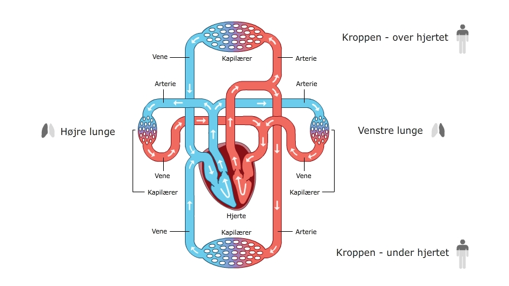

Formålet med kroppens kredsløb er at få livsvigtig ilt ned til vores celler. Cellerne arbejder i alle vores væv og organer. De bruger ilt til at arbejde. Uden ilt vil kroppen ikke fungere.
Måden vi får ilt ned til vores celler, er først at få ilt fra luften og ind i vores krop. Når ilten er kommet ind i kroppen – via lungerne – skal det transporteres hen til cellerne. Det er derfor, at vi har vores system af blodårer. I blodårerne binder ilten sig til hæmoglobinet i de røde blodlegemer. Bundet hertil bliver det pumpet rundt i blodårerne.
Det er hjertet, der pumper blodet rundt i blodårerne. Uden hjertets pumpen vil blodet stå stille.
Når det røde blodlegeme med ilten kommer forbi et område, hvor der er meget CO2 og ikke så meget ilt, løsner ilten sig. Ilten bevæger sig ind i cellerne, og på samme tid bevæger CO2 sig væk fra cellerne og over på det røde blodlegeme.
Det røde blodlegeme transporterer nu CO2 op til lungerne, så vi kan ånde CO2 ud af kroppen.
Se Animation 1 - en sammenfattende animation over vores kredsløb.
Animation 1: O2 indåndes og CO2 udåndes.
Du kan også se en samlet oversigt af kredsløbet på Billede 1.
Billede 1: Røde blodlegemer.
Uden ilt vil kroppen virker kroppen ikke. Kan vi ikke trække vejret, kan vi ikke få ilt til cellerne. Banker vores hjerte ikke vil den ilt vi indånder heller ikke kunne komme ud til cellerne. Det er derfor livsvigtigt at trække vejret og at vores hjerte banker.